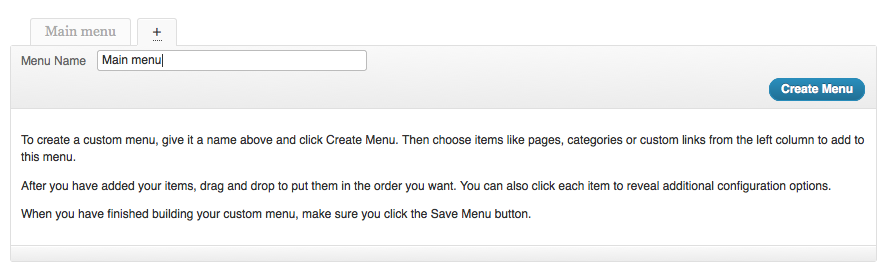
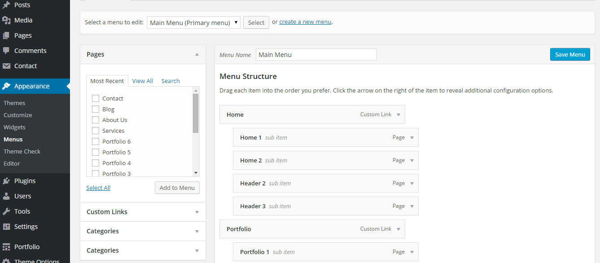
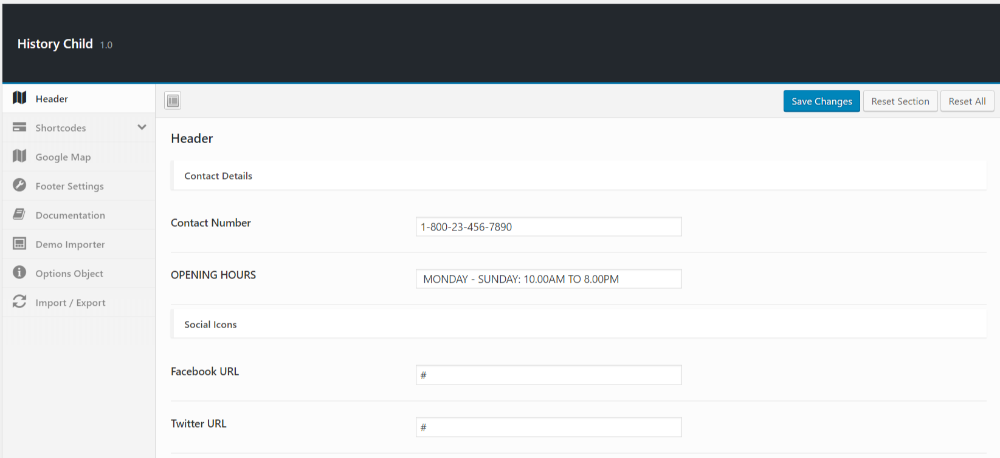
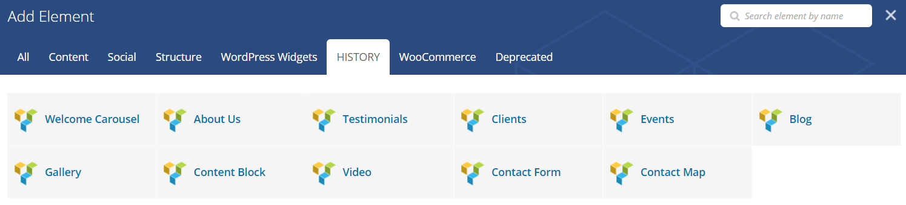

History is an amazing Responsive Theme. This Theme is Suited for Museum, Antiques & History. Start using History today and make your website more amazing then anyone else. With great features such as Revolution Slider, Portfolio Section, contact for and more, you have everything you need to get your website landing page up and running with a professional touch in minutes!
If you have any questions, please use the comments from the item's page. ( wpmines ).
| Author: | wpmines |
| Contact: | wpmines |
| Author URL: | wpmines |
| Item URL: | wpmines/Portfolio |
| Current Version: | 1.0.0 |
| Documentation Version | 1.0.0 |
| Created: | 2016-Nov-03 |
| Modified: | 2016-Nov-03 |
Main stylesheet files used for this theme, you can find more information opening each file:
| File Name | Description |
|---|---|
styles.css |
Styles for general elements for the template. |
bootstrap.min.css |
Bootstrap stylesheet. |
fonts/font-awesome.min.css |
Styles for font-awesome. |
animate.min.css |
Styles for animation. |
Main JavaScript files for this theme:
| Tag | Description |
|---|---|
bootstrap.min.js |
Bootstrap JS |
jquery.easing.min.js |
easing JS |
js/functions.js |
Custom History JS |
"History Preview" has images from Fotolia, shutterstock and istockphoto.
Fonts used: Lora, PT Serif, Poppins, Roboto Google Web Fonts
Brief information about how to install your WordPress theme from scratch
Unzip the main files (the file that you have downloaded when you have purchased the theme). The theme installer is 'theme_name'_installer.zip. NOTE! - This is the only file that you should use to install the theme.
Log in to your Wordpress Admin Panel, go to Appearence > Themes > Install Themes > Upload. Upload the zip file that was discussed in the above topic.
Once you have uploaded the theme, it automatically installs to your wordpress. Click the Activate button to activate the theme.
Please read the usage documentation below.
Note: Activate all required plugins once theme is activated. Required plugin name will appear in dashboard once theme activated.
Go to Theme Options > Demo Importer > Click Demo Import
Note: Find XML & JSON files inside "Sample Data" directory.
Information about adding pages and different content type.
In order to add content to your website first you have to add Pages, pages can be added from the Admin > Pages > Add new.
After you have added at least one page, you can start adding pages to the website's menu, go to Admin > Appearence > Menus
Add a new menu from the menu panel, save it, than select the created menu from the "Theme Location" panel and save it.

You can add pages to menu from the Pages panel, than you can change menu items labels or order from the menu panel.
NOTE! Click on the image to see the full size

1. Create a regular page under pages.
2. From the Editor ('Theme Shortcodes') select the 'Blog Post' as a Shortcode .
3. You can add Blog posts from Admin>Posts>Add new.
4. Add this page to the menu:
Go to Admin > Appearence > Menus, from the 'Pages panel' select the page you have just created than click 'Add to Menu'.
From the menu panel you can change menu items order (just drag the menu items up/down). For more information about creating the website's menu see Add Menu
In order to set theme general options go to Admin > Theme Options. You can set there logo, favicon, social media, contact and more.
NOTE! Click on the image to see the full size
Within the History main download package you can find the following plugins:
Usage:
Include shortcode to display specific sections in your page.
History Custom Shortcodes:
Refer following images for same..
